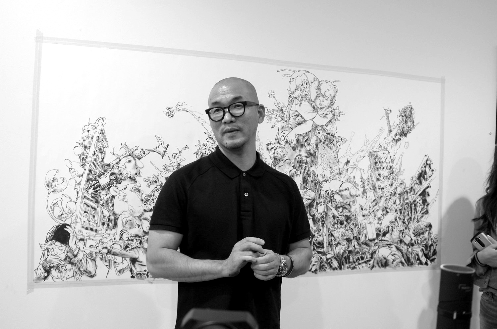
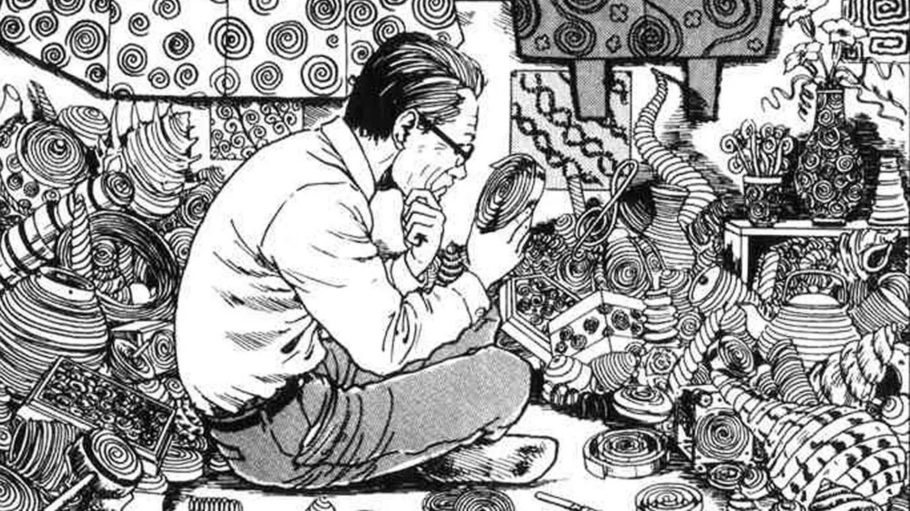
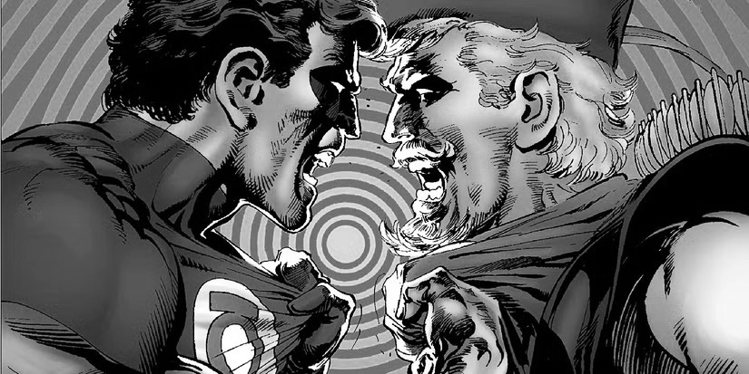
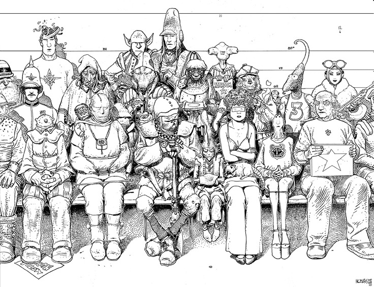
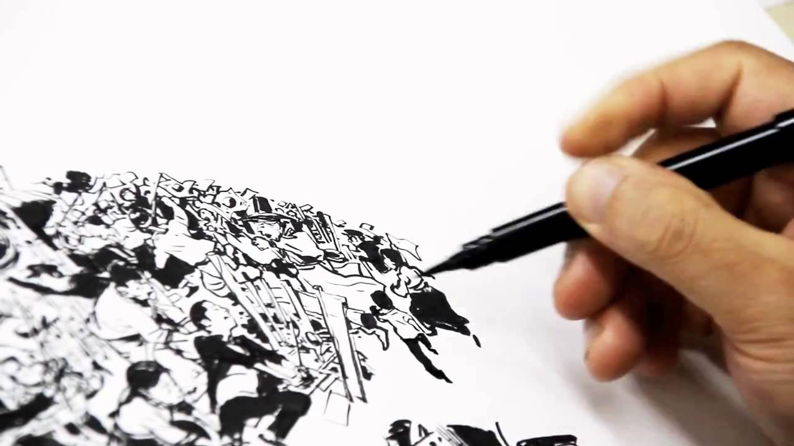
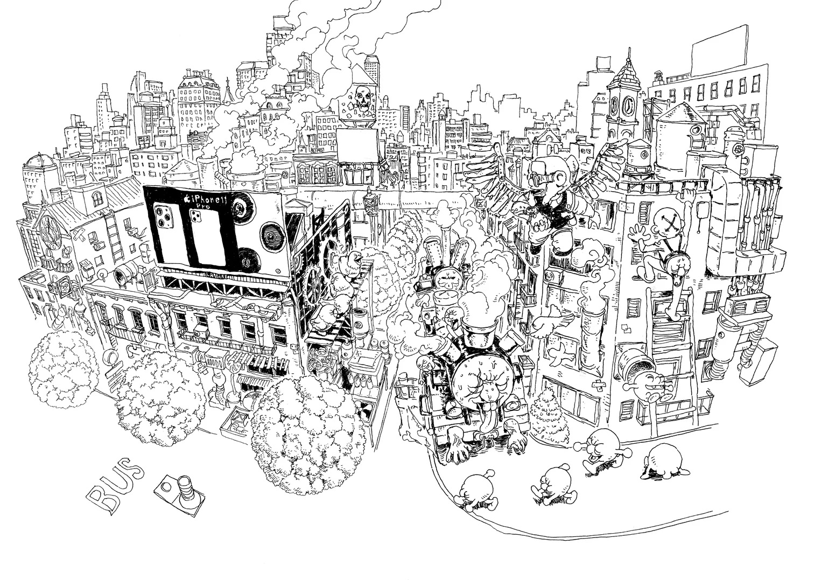

Self-Styled: Kim Jung Gi
Explore the creativity and influence of one of the most celebrated contemporary illustrators. Look into his artistic process, remarkable ability to draw from memory, and the global impact of his live demonstrations and teaching.

Prominent Manga Artists
Influential creators who have shaped the visual language of manga through distinctive storytelling, dynamic composition, and iconic character design.

Comic illustrations
Learn about the history of sequential art and how artists have used panels, pacing, and composition to develop visual storytelling from early printed works to modern graphic novels. It looks at the evolution of the medium, the stylistic approaches that define different eras, and how illustrators continue to push narrative boundaries through image-based storytelling.

From concept to canvas
Explore how illustrators translate ideas into finished visual works through process, experimentation, and technique. It highlights the stages of development in illustration practice and the ways artists shape composition, style, and storytelling from first sketch to final piece.

Sketchbook studies
Where ideas are tested, repeated, and reworked over time. It shows how sketches function as part of an ongoing process of thinking, problem-solving, and visual development rather than final presentation.

Form,Figure, Perspective
How illustrators construct believable space and structure through the relationship between the human form, objects, and spatial depth. It examines how proportion, angle, and viewpoint work together to create clarity, movement, and visual stability within a composition.